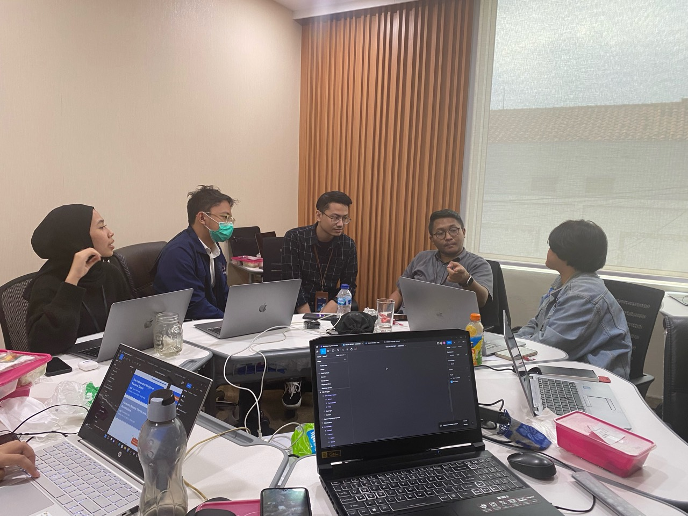
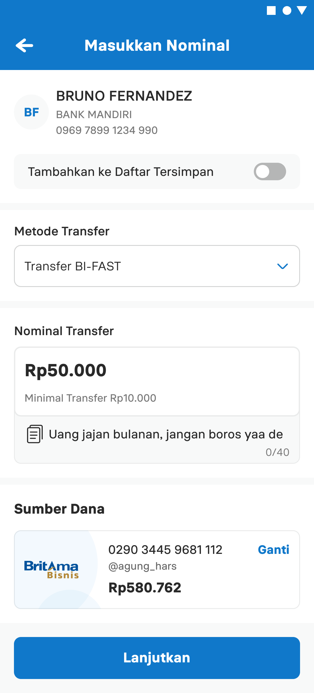
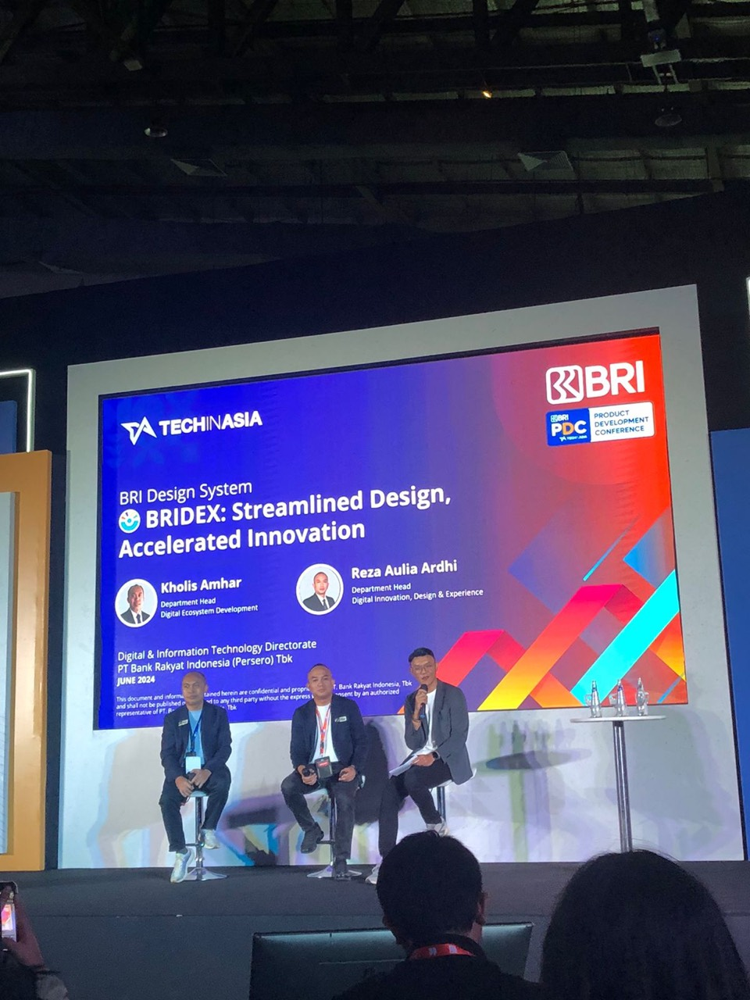

BRIdex foundations: typography, color, icons, and component anatomy.
Overview
I first treated BRIdex as a library problem: clean up the components, fix the documentation, and publish something designers could trust.
That was only part of it.
As I spoke with designers across BRI, I found a wider problem. Teams needed time to maintain the system, a clear way to contribute, and support to move away from their existing components.
Role
Lead Product Designer
Timeline
2021–2022
Scope
Workflow, component architecture, design strategy
Team
2 designers, 4 UI designers
Full story previewA shared organization, but not a shared systemSee full case study ↓
A shared organization, but not a shared system
BRI had five main product squads, along with other products, ad-hoc dashboards, and design contributors outside the department. The organization looked centralized, but each team had developed its own way of working.
BRI product-design landscape
Design organizationBRI Product Design
ProductBRImo
ProductAI dashboard
ProductB2B lending
ProductConsumer lending
Beyond the main squadsOther products and dashboards
Common components existed in several versions. Documentation was incomplete. Designers could not always trust the components they inherited, so rebuilding often felt safer than reusing. BRImo and Consumer Lending had also developed separate design systems, even though both belonged to BRI.
Two hero products, two design systemsBRImo × Consumer Lending
BRImoConsumer Lending
These two hero products show how teams built separate design libraries, resulting in different visual foundations inside the same organization.
A stronger library seemed like the answer. Before committing to it, I ran a workshop with product designers from different products and streams.
The workshop exposed three tensions
The discussion shifted the problem from component quality to the conditions surrounding the work.
CapacityDesigners created local components to meet deadlines but rarely had time to maintain them.
TrustComponents and documentation were inconsistent, and the implementation did not always match Figma.
OwnershipTeams did not know when to contribute, who should decide, or whether system work should take priority over product delivery.

The workshop changed the brief. The library still needed work, but better components alone would not fix the conditions that had allowed the old system to decay.
The underlying question was no longer what to build, but how the organization would maintain it.
Two layers of the same system
To answer that question, I organized BRIdex into two connected layers.
BRIdex, two connected layersProject framework
What lived in Figma and code
System layer
Foundations
Components
Documentation
How the organization maintained it
Operating layer
Component workflow
Reliability and maintenance
Clear ownership
Both layers were necessary. Together, they connected the design assets to the people and decisions required to sustain them.
This reframed BRIdex from a library project into organizational work with time, ownership, and accountability.
A shared core with room for product needs
The two-layer framework now needed a practical structure. The system layer became the design-system architecture: a shared core for common foundations and components, connected to local libraries for product-specific needs. The operating layer defined who would maintain each part and support adoption. With the mandate and design capacity in place, I could put that structure into practice.
BRIdex architecture
Shared direction
Design Principles
Shared system
Foundation
Core Components
Local adaptation
Local Library A
Local Library B
Local Library C
Product experience
Product A
Product B
Product C
Maintained byCore Component Team + Experience Team
Maintained byEmbedded maintainers
Shared foundations and components gave BRI Group a common base, while local libraries preserved product-specific patterns.
I divided ownership across three groups.
▤
Core Component Team
Four UI designers worked on the shared foundation, components, documentation, and design quality. At the time, the group was called the Development Team, despite being a design function.
◌
Experience Team
Two product designers handled documentation, release communication, migration support, and adoption. I led the team.
↗
Embedded maintainers
Product designers were expected to maintain local libraries, connect them to the shared foundation, and bring product needs back to BRIdex.
This extended responsibility beyond the central team, but could not guarantee enough time for maintainers when product roadmaps became busy.
The token architecture remained under research and was not implemented. The working principle was to share components across BRI Group while allowing for different product needs.
BRImo as the pilot
BRImo was the first hero product to implement BRIdex. Its end-to-end revamp already required a new visual language across multiple streams, making it the right place to test the shared system.
I led a phased migration instead of replacing the legacy library at once. Designers and engineers audited existing components together. All design streams adopted BRIdex foundations, while coded migration began with Home, Payment, and Savings. Profile, Settings, and Help Center remained on legacy components until their turn.
BRImo phased implementation flow
BRIdex foundations
BRImo local components
Revamped customer flows
Reusable components contributed to BRIdex core
The transfer flow shows how both systems coexisted. Blue labels mark BRIdex components; black labels mark components kept in BRImo’s local library.
Transfer migration auditReveal the audit, switch libraries, or choose a component to isolate its redline.

Shared and product-specific components working together during the phased migration.
Input Amount: from local need to shared core
The audit found different Input Amount patterns across BRImo streams. I worked with cross-stream designers to define one version, built in the BRImo library with BRIdex typography and color.
Input Amount foundation breakdownReveal the audit, switch foundations, or choose a specification to isolate its redline.
ComponentInput Amount
Nominal Top-up
RpMinimal Top-up Rp10.000
Rp10.000Rp30.000Rp50.000
BRIdex typography and color foundations applied to a BRImo component.
Input Amount shipped in a customer-facing BRImo flow, then moved into the BRIdex core. It became our clearest example of a product component improving the shared system.
The pilot aligned design and engineering around one component direction. It did not migrate every legacy flow, and we did not measure time savings consistently.
What changed, and what did not
What changed
BRIdex moved from voluntary work to a departmental priority. I secured allocated capacity for six designers, defined clearer responsibilities, and helped the team release a shared foundation with documentation.
What remained difficult
Adoption remained partial. Many product maintainers continued using legacy local components. The OKR protected the central design team’s work, but it did not remove the migration cost carried by product teams. Without dedicated engineering ownership, implementation still had to be negotiated product by product.
What remained unmeasured
I defined measures around design time, development effort, onboarding, adoption, and prototype speed. The team did not establish a reliable baseline or collect the measures consistently. They show how I intended to evaluate BRIdex, not proof of business impact.
What I learned
BRIdex changed how I think about design systems. Library quality mattered, but it was not the hardest part. The harder questions were who had time to maintain the system, who paid the cost of migration, and what happened when shared standards competed with a product roadmap.
Securing the OKR made the foundation work possible. It did not solve adoption on its own.
If I approached the project again, I would establish engineering ownership and a migration plan earlier, alongside the component architecture.
People and moments

BRIdex at the Tech in Asia Product Development Conference.